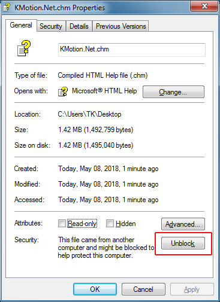

Dynomotion's Motion Libraries provide a .NET interface. The .NET interface allows all the functionality of the KMotion Libraries to be imported and made accessible to your application with a simple reference to KMotion_dotNet.dll. .NET is a standard that works with many different Languages including Visual C#, Visual Basic, Visual C++, IronPython, LabView, and many others. Once the reference is included in the project all the classes, member functions, variable, and data types are accessible. Most languages will provide intellisense and auto complete for all the imported objects once a reference is established.
The functionality exposed by the KMotion .NET interfaces is documented in a Help file. This documentation is available in two formats. As an installed Windows Help file (KMotion_dotNet.dll) or as on-line pages view-able with a browser. The Installed Windows Help file is installed with KMotion at <installed>\KMotion_dotNet\Docs\Help\KMotion.Net.chm
You can also download the .NET Interface Windows Help from our website. You will need to save the file, then right-mouse-click it, and select “Properties” and “Unblock”:
